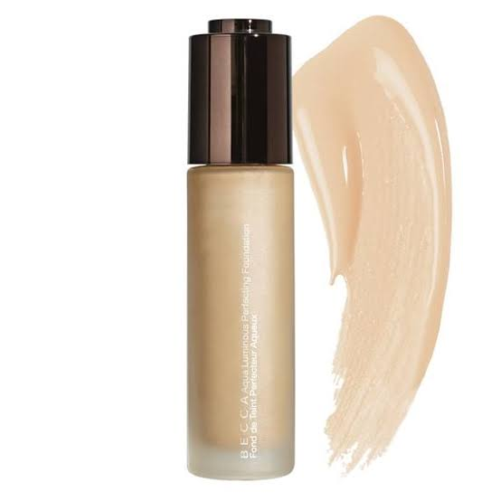
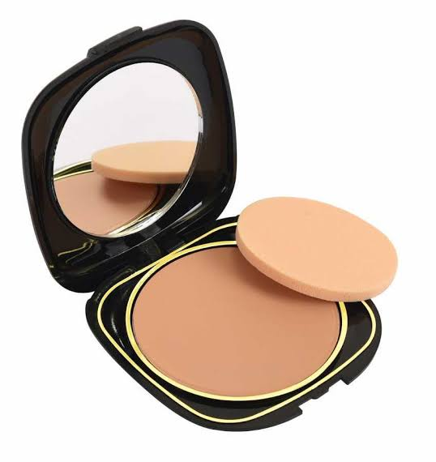
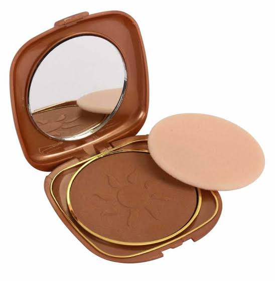
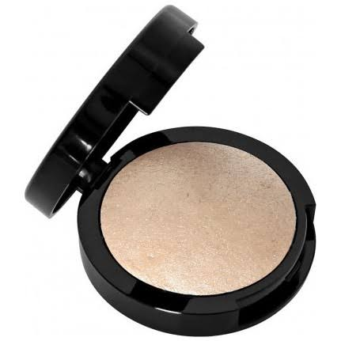

Makyaj Ürünlerimiz
|  | Fondöten |
|
Ciltte tabaka halinde kalmaz. |
||
|  | Pudra |
|
Pullaşma olmaz. Sabitleyici olarak kullanılabilir. |
||
|  | Bronzer |
|
Homojen görüntü bırakır, çamur izlenimi vermez. |
||
|  | Highlighter |
|
Sim içermez.El ile kullanıma uygundur. |
||